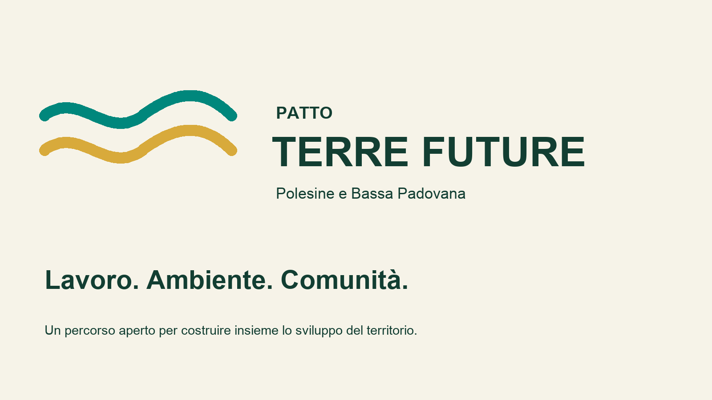

“Terre Future”: un patto per il Polesine e la Bassa Padovana
Quale futuro vogliamo per il Polesine e la Bassa Padovana? Di fronte allo spopolamento, ai giovani che se ne vanno e alla carenza di lavoro qualificato, serve una strategia condivisa.
Il confronto sui nuovi insediamenti industriali ed energetici, da Ecopol e FIR agli impianti per fanghi e biometano, fino all’ipotesi nucleare a Porto Tolle, pone una domanda: quale disegno complessivo guida le trasformazioni dei nostri territori?
Chiediamo che ogni progetto sia valutato per gli effetti ambientali, sanitari, economici e occupazionali, considerando anche le pressioni già presenti. Vogliamo scegliere lo sviluppo, orientandolo verso attività capaci di creare valore e lavoro qualificato nel rispetto delle comunità.
Per questo proponiamo “Terre Future – Patto per il Polesine e la Bassa Padovana”, con tre priorità:
- Lavoro e innovazione: ricerca agricola, gestione efficiente dell’acqua, trasformazione agroalimentare, manifattura avanzata e formazione.
- Ambiente e qualità della vita: rigenerazione delle aree degradate, forestazione urbana, tutela del suolo e del paesaggio.
- Partecipazione e trasparenza: progetti conoscibili, dati accessibili e comunità coinvolte prima delle decisioni.
Anche l’Interporto di Rovigo deve rientrare in questa visione, valorizzando la logistica intermodale e garantendo trasparenza e tutela delle comunità vicine.
Invitiamo comitati, associazioni, imprese, mondo agricolo, realtà della formazione e amministrazioni locali a costruire insieme il Patto. Proponiamo un tavolo di lavoro con obiettivi concreti, responsabilità precise, tempi e risultati verificabili.
Serve una classe dirigente competente, capace di ascoltare e trasformare una visione in scelte durature.
Mettiamo a disposizione la nostra proposta perché diventi un progetto comune: creare opportunità per chi vive qui e condizioni perché i giovani possano scegliere di restare.
Verdi – Reti Civiche Polesine